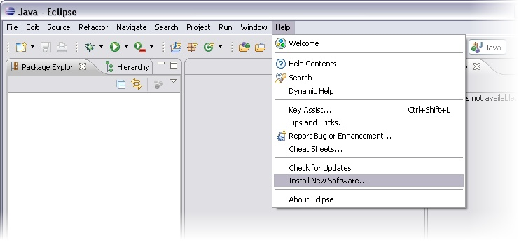
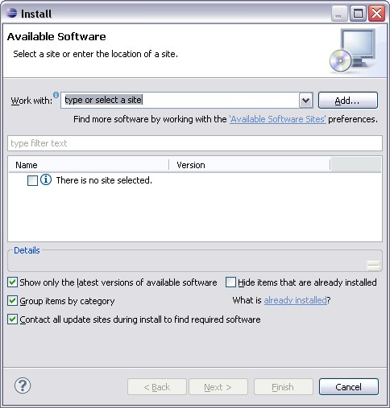
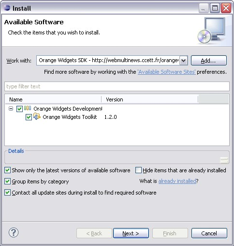
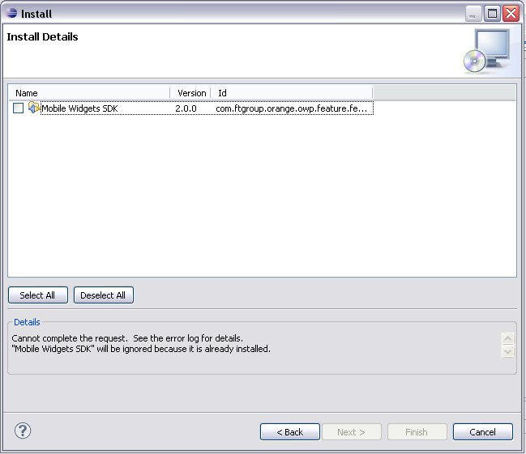
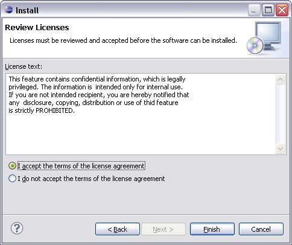
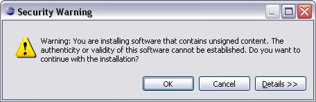
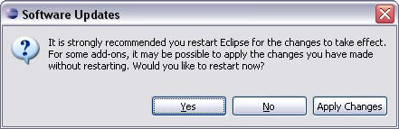

Before you install the plug-in, make sure that your development environment fits the following requirements:
This section contains information to install Mobile Widgets plugin for Eclipse.
This Plugin add VRML syntaxic coloration and "automatic formating" in Eclipse.
Warning:
Uninstall Djinngo SDK if any conflict occur during installation.
On Eclipse, open new plugin interface (Help > Install a new software).

Add a remote site (Add button):

Complete information about update site:
Select Mobile Widgets Toolkit and launch installation via the Next button.

Install Details window is displayed. Click on Nextbutton to continue installation.

SDK license window is displayed. Read and accept license. Click on Finish button to continue.

During installation, a Security Warning message is displayed. Click on Ok button to accept the plugin installation.

At the end of installation, Eclipse needs to be reboot to complete installation. Accept to reboot Eclipse (via the Yes button).

After reboot, Mobile Widgets SDK installation is finished.
Congratulations. You can now build your own widgets.